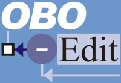

|  |
OBO-Edit WebinarIRC |
||||||
|
The OBO-Edit webinar will handle live chat over IRC (Internet Relay Chat). The best way to connect to the OBO-Edit IRC chat is to use the applet on the front page. If you decide you'd like to use your own IRC applet, connect to irc.sf.net and join the #oboedit channel. There are many, many IRC clients available for every computer platform. If you'd like to download your own client, consider:
Although we won't be using most IRC features during the webinar, there are dozens and dozens of commands and special IRC features. If you want to read up, take a look at the IRC primer at http://www.irchelp.org/irchelp/ircprimer.html |